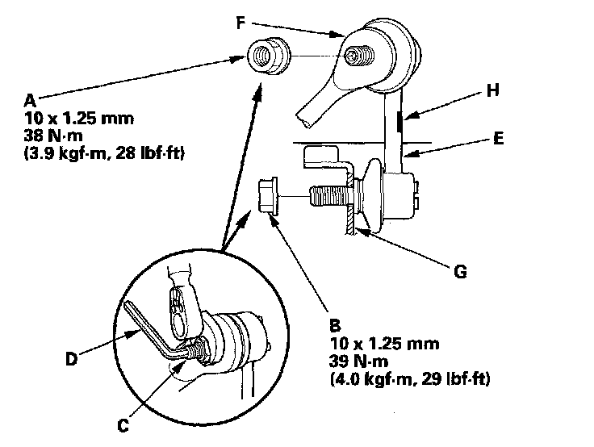

Rear Suspension
Stabilizer Link Removal/Installation1. Raise the rear of the vehicle, and support it with safety stands in the proper locations.
2. Remove the rear wheel.
3. Remove the self-locking nut (A) and the flange nut (B) while holding the respective joint pin (C) with a hex wrench (D), then remove the stabilizer link (E).

4. Install the stabilizer link on the stabilizer bar (F) and trailing arm (G) with the joint pins set at the center of their range of movement.
NOTE: The stabilizer link has a paint mark (H). Align the paint mark on the stabilizer link facing rearward.
5. Install a new self-locking nut and a new flange nut, and lightly tighten them.
6. Place a floor jack under the trailing arm, and raise the suspension to load it with the vehicle's weight.
7. Tighten the self-locking nut and flange nut to the specified torque values while holding the respective joint pins with a hex wrench.
8. Reinstall all removed parts and test-drive the vehicle.
9. After 5 minutes of driving, torque the self-locking nut again to the specified torque value.